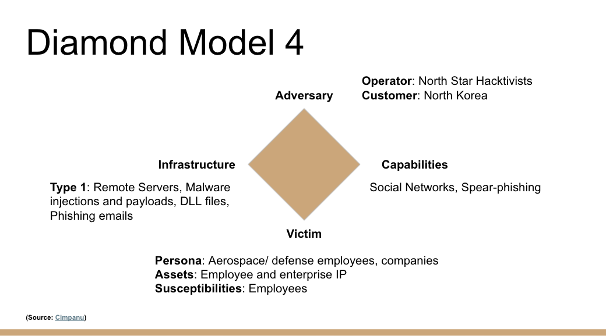
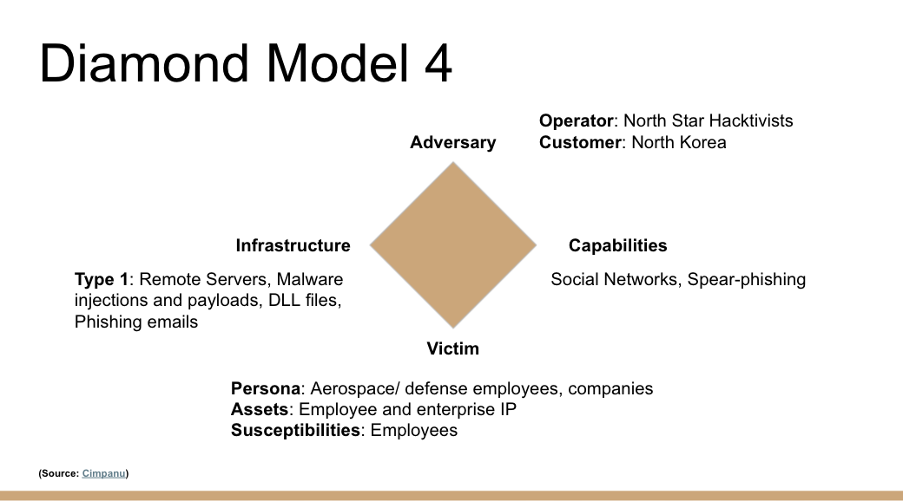

Diamond Modeling
Diamond models are a popular way to model a threat scenarios and events in a systematic, repeatable manner. The Diamond Model's four components are: Adverasry, Capability, Victim, and Infrastructure.
The following are Diamond Models for the Aerospace & Defense industry:
 
